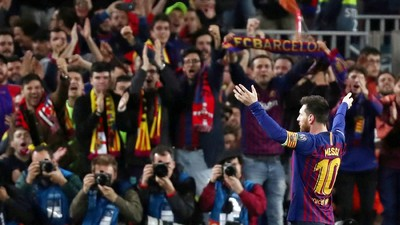

Sejarah FC Barcelona
FC Barcelona, atau sering disebut juga Barça, adalah salah satu klub sepak bola terkenal di dunia. Klub ini didirikan pada tahun 1899 di kota Barcelona, Spanyol. FC Barcelona memiliki sejarah panjang yang kaya dengan prestasi yang mengesankan.

Sejarah FC Barcelona dimulai dengan pendirian klub oleh sekelompok pemain sepak bola asal Swiss, Inggris, dan Katalan. Sejak saat itu, klub ini telah menjadi simbol identitas budaya dan bangga di kota Barcelona. FC Barcelona dikenal dengan filosofi permainan menyerang yang spektakuler dan gaya bermain yang menghibur para penggemar sepak bola di seluruh dunia.
FC Barcelona telah mencapai banyak kesuksesan selama sejarahnya. Mereka telah memenangkan berbagai kompetisi termasuk La Liga, Copa del Rey, Liga Champions UEFA, Piala Super UEFA, dan Piala Dunia Antarklub FIFA. Klub ini juga dikenal karena mengembangkan dan mempromosikan gaya permainan yang indah dan menyerang yang dikenal sebagai "tiki-taka."

Salah satu momen paling bersejarah dalam sejarah FC Barcelona adalah kedatangan Lionel Messi. Messi adalah salah satu pemain terbaik dalam sejarah sepak bola dan telah membantu klub ini meraih banyak gelar. Dia juga merupakan pencetak gol terbanyak sepanjang masa bagi klub ini. Messi menjadi simbol keunggulan dan kesuksesan klub Barcelona selama lebih dari satu dekade.

Stadion Camp Nou menjadi bagian integral dari sejarah FC Barcelona. Stadion ini dibangun pada tahun 1957 dan menjadi salah satu stadion sepak bola terbesar di dunia dengan kapasitas lebih dari 99.000 penonton. Camp Nou telah menjadi tempat di mana para penggemar Barça berkumpul untuk mendukung klub mereka dan menyaksikan pertandingan-pertandingan menarik.
FC Barcelona juga terkenal karena kepemilikan dan struktur organisasinya yang unik. Klub ini dimiliki oleh para anggota atau socis yang memiliki suara dalam pengambilan keputusan penting klub. Ini menunjukkan betapa kuatnya ikatan antara klub dan komunitas Barcelona.

FC Barcelona telah meraih berbagai gelar dan trofi sepanjang sejarahnya. Klub ini telah memenangkan Liga Champions UEFA beberapa kali, serta gelar-gelar liga dan piala domestik lainnya. Prestasi ini mencerminkan kekuatan dan dominasi FC Barcelona di panggung sepak bola dunia.
Dalam sejarahnya, FC Barcelona juga menganut nilai-nilai yang penting seperti keberagaman, toleransi, dan dukungan terhadap masyarakat. Klub ini telah terlibat dalam berbagai kegiatan sosial dan amal yang memperkuat ikatan mereka dengan komunitas Barcelona.
Secara keseluruhan, sejarah FC Barcelona adalah cerita keberhasilan dan kebanggaan. Klub ini telah menciptakan warisan yang tak terhapuskan dalam dunia sepak bola. Dari pendirian klub hingga prestasi gemilang di lapangan, FC Barcelona terus menjadi ikon dalam dunia olahraga dan menjadi inspirasi bagi banyak orang di seluruh dunia.
Secara keseluruhan, sejarah FC Barcelona adalah cerita keberhasilan dan kebanggaan. Klub ini telah menciptakan warisan yang tak terhapuskan dalam dunia sepak bola. Dari pendirian klub hingga prestasi gemilang di lapangan, FC Barcelona terus menjadi ikon dalam dunia olahraga dan menjadi inspirasi bagi banyak orang di seluruh dunia.